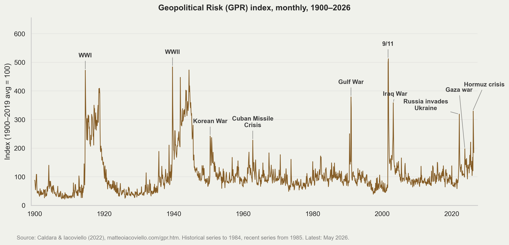
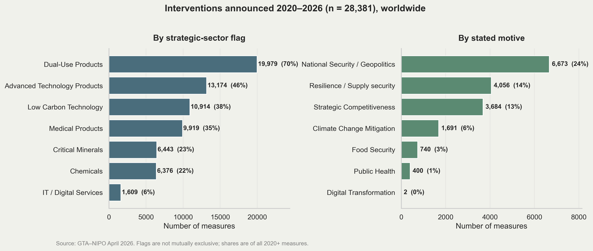
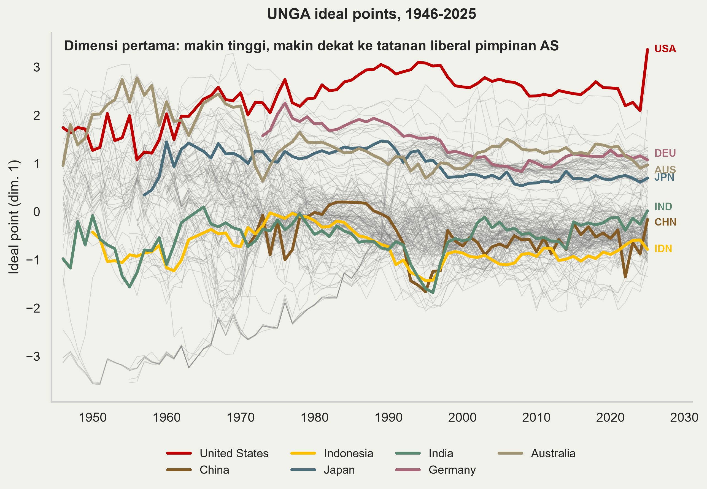
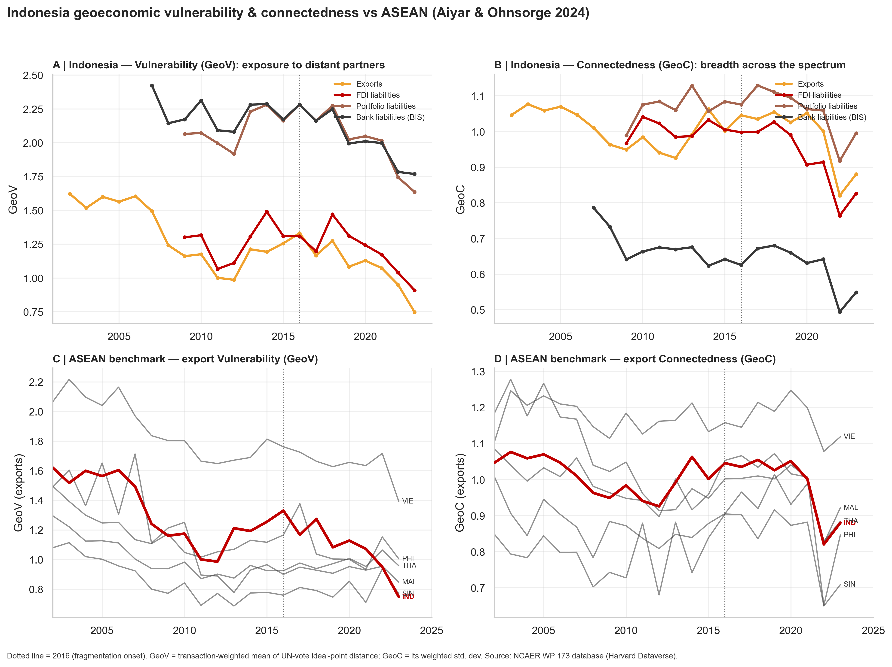
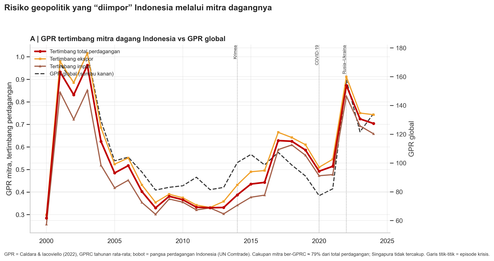

Geopolitik, Geoekonomi, dan ekspor impor
2026-07-21
Tentang saya
Ekonom di Dewan Ekonomi Nasional.
Pengajar di Universitas Indonesia.
PhD in Economics, Australian National University.
Riset: kebijakan perdagangan & industri, ekonometrika terapan.
Sapa saya di
@imedkrisnaatau baca krisna.or.id.
Alur presentasi
DHE dan keterkaitannya dengan geoekonomi
Geoeconomics is back!
Indokator terkait.
Implikasi: dari indikator ke profil risiko eksportir-importir.
DHE dan geoekonomi
DHE SDA dalam satu slide
Basis hukum: carve-out dari rezim devisa bebas UU 24/1999 Pasal 2. Sektor: tambang, perkebunan, kehutanan, perikanan — 1.545 pos tarif (KMK 2/KM.4/2025).
| Aturan | Efektif | Ketentuan pokok |
|---|---|---|
| PP 1/2019 | Jan 2019 | Repatriasi ke Rekening Khusus; tanpa retensi |
| PP 36/2023 | Agu 2023 | Retensi 30% / 3 bulan; ambang PPE ≥ USD 250 ribu |
| PP 8/2025 | Mar 2025 | Retensi 100% / 12 bulan nonmigas; migas tetap 30%/3 bln |
| PP 2/2026 | Feb 2026 | Hanya bank Himbara; konversi rupiah maks 50%; SBN valas |
| PP 21/2026 | Jun 2026 | Pengecualian untuk mitra (dan Trump) |
Dampak retensi DHE?
Retensi DHE dilakukan untuk menahan devisa agar tetap di Indonesia.
- disediakan juga fasilitas instrumen savingnya.
Efektivitas perlu diteliti lebih lanjut: cashflow dan kewajiban, lending-deposit rate gap, insentif DHE lain.
Apakah kalkulasi geoekonomi mengubah perilaku ekspor impor?
Retensi DHE di mata dunia
Global Trade Alert mengkode DHE sebagai capital control — evaluasi Red (diskriminatif; intervention 73893).
IMF (Article IV 2025) menyebutnya capital flow management measure dan merekomendasikan phase-out bertahap, tapi bagi pemerintah, pengelolaan DHE adalah mandat konstitusi (UUD 1945 Pasal 33) atas tata kelola SDA.
Dari DHE ke geoekonomi
PP 21/2026 membuat ketatnya rezim DHE fungsi dari diplomasi dagang: ekspor tambang di bawah perjanjian bilateral (kasus: reciprocal trade dengan AS) mendapat rezim ringan 30%/3 bulan.
Artinya: aturan yang Bapak/Ibu awasi sudah menjadi variabel geopolitik.
Di arah sebaliknya, dinamika geopolitik mengubah tujuan ekspor, rute logistik, mekanisme pembayaran, dan manajemen valas — persis objek pengawasan DHE dan DPI.
Maka pertanyaan sesi ini: apa sebenarnya geoekonomi, bagaimana ia menggerakkan perilaku pelaku ekspor-impor, dan dengan indikator apa kita mengukurnya.
Bagian 2 — Apa itu geopolitik & geoekonomi?
Definisi
Geopolitik: persaingan antar negara untuk memengaruhi sebuah wilayah/negara beserta penduduknya.
Geoekonomi: bidang studi yang mengkaji keterkaitan antara geopolitik dan ekonomi (Mohr & Trebesch 2025). Lebih jauh penggunaan instrumen ekonomi (tarif, sanksi, pemutusan pasokan) untuk tujuan politik, dan sebaliknya.
Konsep lama yang hidup kembali
1915: Inggris menekan Italia agar bergabung dalam Perang Dunia I — dengan ancaman memutus pasokan batu bara dan input tekstil yang didominasi oleh INggris.
Hirschman (1945): struktur perdagangan luar negeri adalah struktur kekuatan nasional. ketergantungan dagang bisa dikonversi menjadi pengaruh politik.
Perdagangan sebagai instrumen kekuasaan sudah berumur berabad-abad; yang baru adalah skalanya hari ini.
Liberalis vs realis
Pandangan liberalis: integrasi ekonomi membuat perang makin jarang karena opportunity cost yang tinggi. Damai lebih menguntungkan daripada berantem.
Pandangan realis: integrasi justru memudahkan konflik. Pasar bebas membuat mudah berganti mitra, sehingga biaya konfrontasi kecil menjadi rendah.
Sintesis empiris: globalisasi menekan perang berskala besar tetapi menaikkan frekuensi konflik kecil.
Dua-duanya benar sebagian — dan keduanya relevan untuk membaca dunia pasca-2016.
Risiko geopolitik selalu bergejolak

GPR (Caldara & Iacoviello 2022)
Pemerintah merespons: intervensi kembali

Grafik: jumlah kebijakan industri per tahun (distortif vs liberalisasi), dari NIPO GTA: 81% gelombang pasca-2020 bersifat distortif.
Apa yang disasar, dan mengapa

Intervensi terkonsentrasi pada produk dual-use (70%), teknologi maju (46%), rendah karbon (39%), medis (35%), dan mineral kritis (23%).
Motif yang dinyatakan: national security (24%) dan supply-chain resilience (14%) — geopolitik, bukan kegagalan pasar klasik.
Bagian 3 — Bagaimana geopolitik memengaruhi ekonomi?
Menuju blok
Sanksi & export controls AS: pembekuan cadangan devisa dan pemutusan SWIFT (Rusia, 2022); kontrol chip & mesin litografi (Tiongkok, 2022).
Secondary sanctions memaksa negara ketiga memilih rezim kepatuhan: dengan siapa Anda boleh berbank, berkapal, berasuransi, berbagi teknologi.
Tambahkan tembok tarif 2025 — sistem dagang mulai terbelah menjadi sphere AS dan sphere Tiongkok.
Contoh nyata di perjanjian dagang: klausul “Poison Pill” dalam US ART.
Apakah ini sudah terlihat di data perdagangan? Ya.
Trade bloc is back?
Gopinath, Gourinchas, Presbitero & Topalova (JIE 2025) — estimasi gravity pada data bilateral granular:
Sejak perang Ukraina, perdagangan antar-blok (AS-sentris vs Tiongkok-sentris) ~11% lebih rendah, dan FDI ~12% lebih rendah, dibanding arus di dalam blok yang sama.
Pembanding sejarah: selama Perang Dingin perdagangan antar-blok jatuh dua pertiga relatif terhadap intra-blok — masih banyak ruang untuk memburuk.
Beda utama dari Perang Dingin: negara “connector” nonblok tidak mengalami penurunan — mereka menjembatani kedua blok dan justru naik perannya.
Indonesia berdagang besar dengan kedua blok. Status connector adalah aset kita.
Ilustrasi: krisis Hormuz & peluang urea
Krisis Selat Hormuz awal 2026 mengingatkan makna risiko chokepoint: ~1/5 minyak dunia transit di sana.
Australia mengimpor 63% urea-nya (USD 1,02 dari 1,62 miliar) lewat Hormuz. Indonesia sendiri: ~80% impor BBM olahan transit hub Singapura/Malaysia.
22 Juni 2026: MV Medi Luna sandar di Brisbane membawa 47.250 ton urea PT Pupuk Indonesia — kesepakatan G2G Prabowo–Albanese di bawah IA-CEPA, rute bebas-Hormuz.
Kapasitas urea Indonesia 7,8 juta ton vs kebutuhan domestik 6,3 juta ton — surplus yang bisa diekspor.
Pesannya: ketegangan geopolitik me-reroute perdagangan — risiko bagi yang terkonsentrasi, peluang bagi connector. Dan setiap re-routing mengubah profil transaksi DHE/DPI yang Bapak/Ibu awasi.
Diversifikasi & resiliensi
Schwarzbauer, Gillesberger & Perschke (EcoAustria RP 34, 2026) — wilayah-wilayah Uni Eropa pada krisis 2008/09:
Diversifikasi diukur dengan inverse Herfindahl-Hirschman Index atas pasar tujuan ekspor (gross dan value-added).
Temuan: wilayah yang lebih terdiversifikasi mengalami kontraksi output lebih kecil saat guncangan.
Namun fase pemulihan justru didorong spesialisasi & inovasi — ada trade-off antara daya serap guncangan dan kecepatan pulih.
Pesan metodologis untuk kita: konsentrasi bisa (dan perlu) diukur — dan ukurannya adalah HHI. Ini indikator pertama kita.
Bagian 4 — Kerangka GeoV & GeoC
Mengukur paparan geopolitik suatu negara
Aiyar & Ohnsorge (2024), Geoeconomic Fragmentation and “Connector” Countries:
Basis: jarak geopolitik bilateral = ideal point distance dari pola voting Majelis Umum PBB (Bailey, Strezhnev & Voeten 2017), skala ~0–5.
Database publik: 188 ekonomi, 2002–2023, empat jenis transaksi — ekspor, FDI liabilities, portfolio liabilities, kewajiban ke bank pelapor BIS.
Dari satu distribusi jarak yang sama dibangun dua indikator: rata-ratanya (GeoV) dan sebarannya (GeoC).
GeoV: Geoeconomic Vulnerability
\[GeoV_i = \sum_j w_{ij}\, d_{ij}\]
di mana \(w_{ij}\) adalah pangsa transaksi negara \(i\) (misalnya ekspor) yang menuju mitra \(j\) (dengan \(\sum_j w_{ij}=1\)), dan \(d_{ij}\) adalah jarak ideal-point antara \(i\) dan \(j\). GeoV adalah rata-rata tertimbang jarak geopolitik terhadap seluruh mitra.
GeoV tinggi = transaksi kita terkonsentrasi pada mitra yang jauh secara politik → lebih terpapar bila terjadi guncangan geopolitik (sanksi, koersi, fragmentasi).
GeoV rendah = mitra utama kita selaras secara politik.
GeoC: Geoeconomic Connectedness
\[GeoC_i = \sqrt{\tfrac{N}{N-1}\sum_j w_{ij}\,(d_{ij}-GeoV_i)^2}\]
dengan notasi yang sama; \(N\) adalah jumlah mitra. GeoC adalah simpangan baku tertimbang dari jarak geopolitik — seberapa lebar spektrum ideologi mitra-mitra kita.
GeoC tinggi = kita berdagang dengan kedua sisi spektrum = negara “connector”.
Penting: memotong mitra yang jauh selalu menurunkan GeoV, tetapi bisa menaikkan atau menurunkan GeoC — kerentanan dan keterhubungan adalah dua hal berbeda.
Temuan Aiyar & Ohnsorge: jarak geopolitik menekan transaksi (terbesar pada FDI); EMDEs lebih vulnerable sekaligus lebih connected daripada negara maju; sejak 2016 EMDEs memangkas keduanya.
Bagian 5 — Indikator untuk Indonesia
Indikator 1: HHI konsentrasi mitra dagang
\[HHI = \sum_j s_j^2 \times 10.000\]
di mana \(s_j\) adalah pangsa nilai mitra \(j\) dalam impor (konsentrasi pemasok) atau ekspor (konsentrasi pasar tujuan) suatu produk, dihitung pada level HS-6. Rentang 0–10.000; makin tinggi makin terkonsentrasi.
CSIS (2026), Strategic Diversification as Indonesia’s Foreign Economic Policy: HHI dan konsentrasi mitra adalah indikator utama substitutability. bersama top supplier share dan elastisitas impor, ia mengukur structural lock-in.
Framing CSIS: strategic diversification ≠ decoupling, ≠ de-risking, ≠ autarki. de-risking berarti diversifikasi tanpa menutup ekonomi.
Aangka Indonesia
HHI impor Indonesia melonjak 900 (2016) → 1.085 (2023) → 1.250 (2024) → 1.534 (2025).
Pendorong utama: pangsa Tiongkok dalam impor naik 22,8% → 36,2%; jumlah lini produk dengan ketergantungan-ekstrem pada Tiongkok naik 7 → 30.
Tiongkok dan AS justru terdiversifikasi (AS: realokasi ke Meksiko). Hal ini memperkuat perdagangan menuju trade bloc.
HHI Indonesia untuk ekspor jauh lebih kecil, menunjukkan diversifikasi yang baik.
Konsentrasi impor
| HS6 | Produk | Nilai 2025 (USD) | Pemasok utama | Pangsa |
|---|---|---|---|---|
| 851713 | Telecom base stations | 2,98 M | Tiongkok | 99,9% |
| 847130 | Laptop | 1,50 M | Tiongkok | 98,6% |
| 260400 | Bijih nikel | 0,75 M | Filipina | 97,0% |
| 381800 | Silicon wafers | 1,65 M | Tiongkok | 88,0% |
| 854143 | Sel surya | 1,43 M | AS | 88,0% |
| 120190 | Kedelai | 1,19 M | AS | 86,8% |
| 870380 | Kendaraan listrik | 2,60 M | Tiongkok | 79,3% |
| 260111 | Bijih besi | 1,28 M | Australia | 70,4% |
Konsentrasi ekspor
| HS6 | Produk | Nilai 2025 (USD) | Tujuan utama | Pangsa |
|---|---|---|---|---|
| 750120 | Nickel sinter/intermediates | 5,41 M | Tiongkok | 99,9% |
| 270210 | Lignite | 5,73 M | Tiongkok | 98,6% |
| 720260 | Ferro-nickel | 16,39 M | Tiongkok | 96,0% |
| 151110 | CPO | 3,09 M | India | 92,6% |
| 850760 | Baterai li-ion | 4,89 M | Tiongkok | 83,5% |
| 470329 | Wood pulp | 2,42 M | Tiongkok | 74,3% |
| 271121 | Gas alam (pipa) | 1,80 M | Singapura | 100,0% |
diversifikasi
Tidak semuanya terkonsentrasi. Contoh dengan pangsa mitra utama rendah:
Ekspor: kopi (top: AS, 13,7%), minyak sawit olahan (USD 21,3 M; top: Pakistan, hanya 15,4%), batu bara non-lignite (USD 18,5 M; top: India, 26,4%), timah, katoda tembaga.
Impor: farmasi (top share ~18–19%), minyak mentah (top: Nigeria, 26,3%), bijih mangan, susu bubuk.
Catatan
Konsentrasi ≠ otomatis kerentanan. Bergantung pada mitra yang stabil & bersahabat berbeda dengan bergantung pada mitra yang mampu melakukan koersi ekonomi. Di sinilah ideal point berperan.
HHI dihitung atas nilai. Ayunan harga komoditas ikut menggerakkan angka.
Indikator 2: keselarasan politik — ideal points
Bagaimana literatur mengukur “kedekatan politik” antarnegara? Bailey, Strezhnev & Voeten (2017): estimasi ideal point dari pola voting Majelis Umum PBB, 1946–kini.
Dimensi pertama merangkum posisi terhadap tatanan liberal pimpinan AS: makin tinggi, makin selaras dengan AS.
Keunggulan dibanding sekadar % kesamaan voting: memisahkan perubahan posisi negara dari perubahan agenda sidang.
Inilah bahan baku \(d_{ij}\) dalam GeoV dan GeoC: \(d_{ij} = |p_i - p_j|\) dengan \(p_i\) ideal point negara \(i\).
Peta blok dunia menurut voting PBB

Indonesia konsisten netral sejak 1955; yang bergerak dramatis justru AS.
GeoV & GeoC Indonesia

Membaca GeoV & GeoC Indonesia
GeoV turun = ekspor kita makin mengalir ke mitra yang selaras secara politik (Tiongkok dkk.) → paparan langsung terhadap guncangan geopolitik turun.
Tetapi GeoC ikut turun = spektrum mitra menyempit → ini konsentrasi, bukan diversifikasi — peran “connector” yang menjadi aset historis Indonesia ikut tergerus.
Bandingkan dengan temuan HHI tadi: dua indikator yang berbeda menunjuk gejala yang sama.
GPR tertimbang

GPR tertimbang mitra: \(GPR^{IDN}_t = \sum_j w_{jt}\, GPRC_{jt}\), dengan \(w_{jt}\) pangsa mitra \(j\) dalam perdagangan Indonesia dan \(GPRC_{jt}\)
Bagian 6 — Implikasi untuk pengawasan DHE & DPI
Dari indikator ke profil risiko
| Indikator | Mengukur | Makna |
|---|---|---|
| GPR & GPR-tertimbang | Intensitas gejolak geopolitik global/mitra | Geopolitical risk, country risk |
| HHI mitra (HS-6) | Konsentrasi pemasok/pasar per produk | Sector risk, trade risk |
| Ideal point distance | Keselarasan politik bilateral | Country risk |
| GeoV & GeoC | Paparan geopolitik agregat per jenis transaksi | Geoeconomic risk |
Semua terukur per-HS6/per-mitra/per-tahun dari data publik → dapat diturunkan menjadi profil risiko per eksportir/importir untuk pengawasan DHE/DPI berbasis risiko.
Kesimpulan
Geoekonomi adalah konsep lama yang hidup kembali: risiko geopolitik dan intervensi pemerintah meningkat dan perdagangan mulai menuju trade bloc.
Indonesia: HHI impor melonjak semakin konsentrasi, bukan diversifikasi, meskipun dengan mitra yang relatif “satu blok”
DHE sendiri kini rezim dua-jalur yang bergantung pada diplomasi dagang (PP 21/2026): geopolitik sudah ada di dalam rulebook pengawasan.
Semua indikator yang digunakan ini terukur, reproducible, dari data publik.siap dipakai untuk profil risiko eksportir-importir. Reproduksi grafik di github repo, dengan tayangan di sini.
Referensi
Aiyar, S. & F. Ohnsorge. 2024. Geoeconomic fragmentation and “connector” countries. NCAER WP 173.
Bailey, M., A. Strezhnev & E. Voeten. 2017. Estimating dynamic state preferences from United Nations voting data. Journal of Conflict Resolution 61(2).
Caldara, D. & M. Iacoviello. 2022. Measuring geopolitical risk. American Economic Review 112(4). Data: matteoiacoviello.com/gpr.htm.
CSIS Indonesia. 2026. Strategic Diversification as Indonesia’s Foreign Economic Policy. Jakarta.
Dewan Ekonomi Nasional. 2026. Dashboard Konsentrasi Perdagangan (Juli 2026); Policy Note Geoeconomics (draft).
Global Trade Alert. 2026. New Industrial Policy Observatory (NIPO), April 2026; intervention 73893.
Gopinath, G., P.-O. Gourinchas, A. F. Presbitero & P. Topalova. 2025. Changing global linkages: A new Cold War? Journal of International Economics 153.
IMF. 2026. Indonesia: 2025 Article IV Consultation. Country Report 2026/010.
Mohr, C. & C. Trebesch. 2025. Geoeconomics. Annual Review of Economics 17.
Schwarzbauer, W., M. Gillesberger & S. Perschke. 2026. From shock to recovery. EcoAustria Research Paper 34.
PP 1/2019; PP 36/2023; PP 8/2025; PP 2/2026; PP 21/2026; Bahan Sosialisasi PP 2/2026 (Kemenko Perekonomian, Feb 2026).
UN Comtrade/WITS. 2025–2026. Bilateral trade, HS-6.